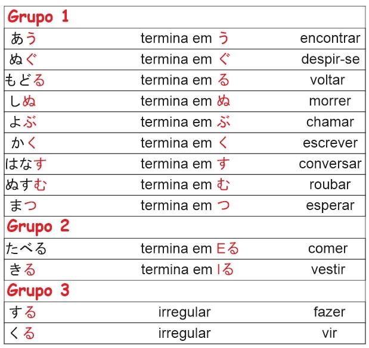

Tabela dos Verbos
Tabela de Verbos

Temos um vídeo onde aborda esses assuntos de uma forma que possibilita melhor entendimento clique aqui.
Primeiro vou te explicar o que é um verbo na forma de dicionário.
O verbo quando está na forma de dicionário é escrito sem nenhum tipo de conjugação, por exemplo:
Comer, correr, lutar, pular, plantar
Quando o verbo é conjugado ele passa a ser chamado de flexão de verbo, por exemplo:
Comerei, atirarei, pularei, lutarei, plantarei, plantei, fugi e etc.
No japonês, cada grupo tem sua forma de flexionar, por isso dividi em três partes, mas calma, não precisa decorar essa tabela. Lembre-se que o nosso aprendizado de palavras, verbo, partículas, elas vem por meio de frases e eu disponibilizarei essas frases para você ir aprendendo com o tempo novos verbos, estruturas, flexões e etc.
Primeiramente, estudaremos o verbo em sua forma natural, te darei algumas frases e você perceberá que os verbos possuem um acompanhante, ou seja, partículas.